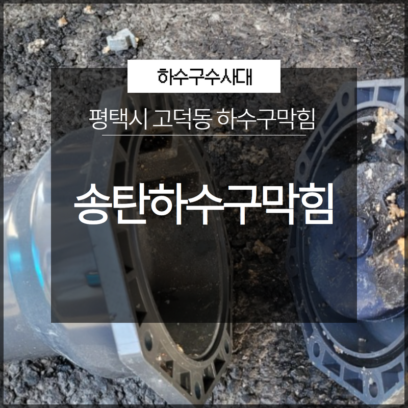
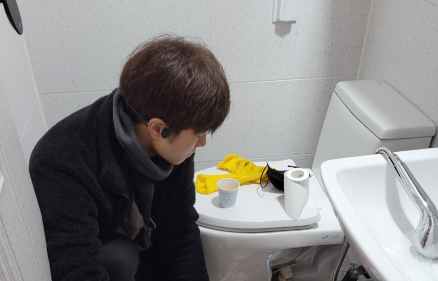
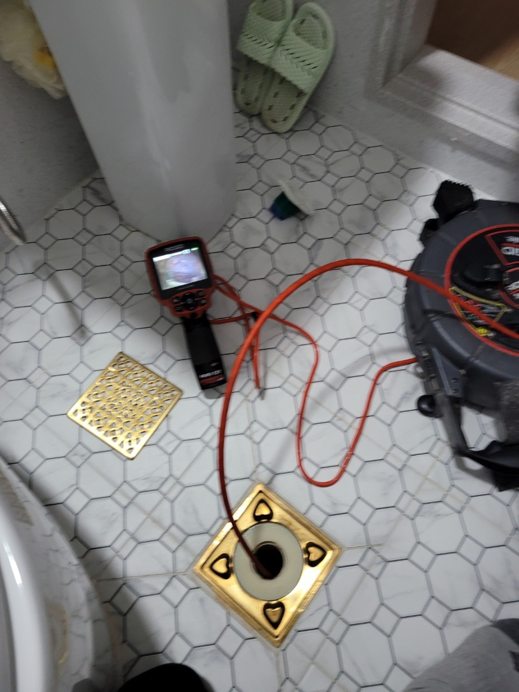
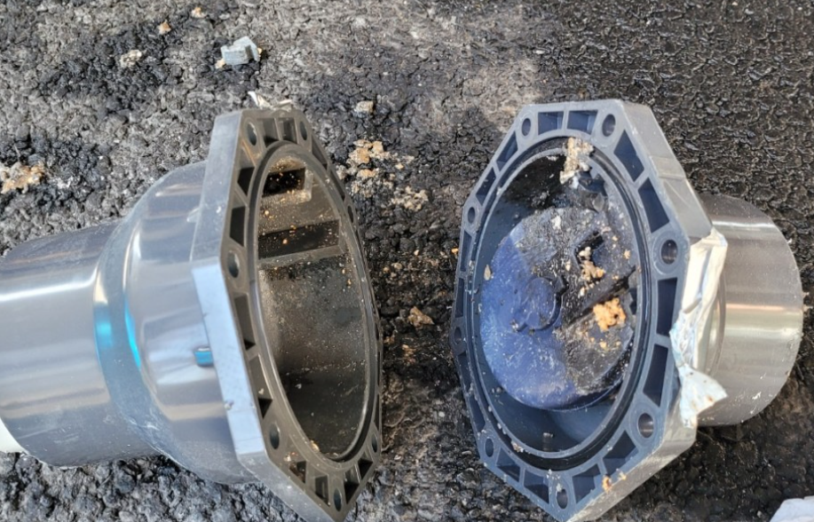
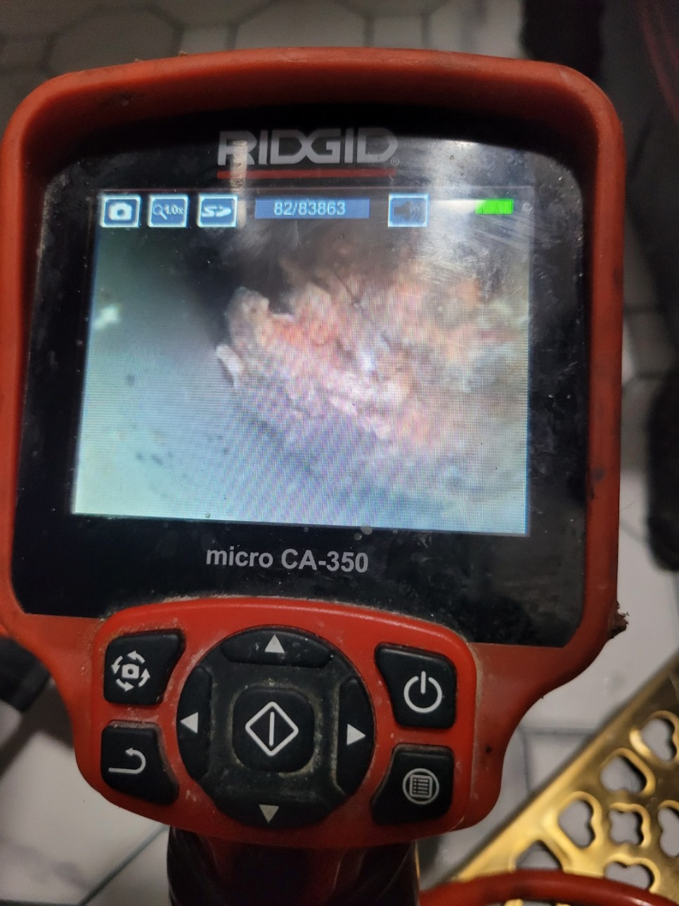
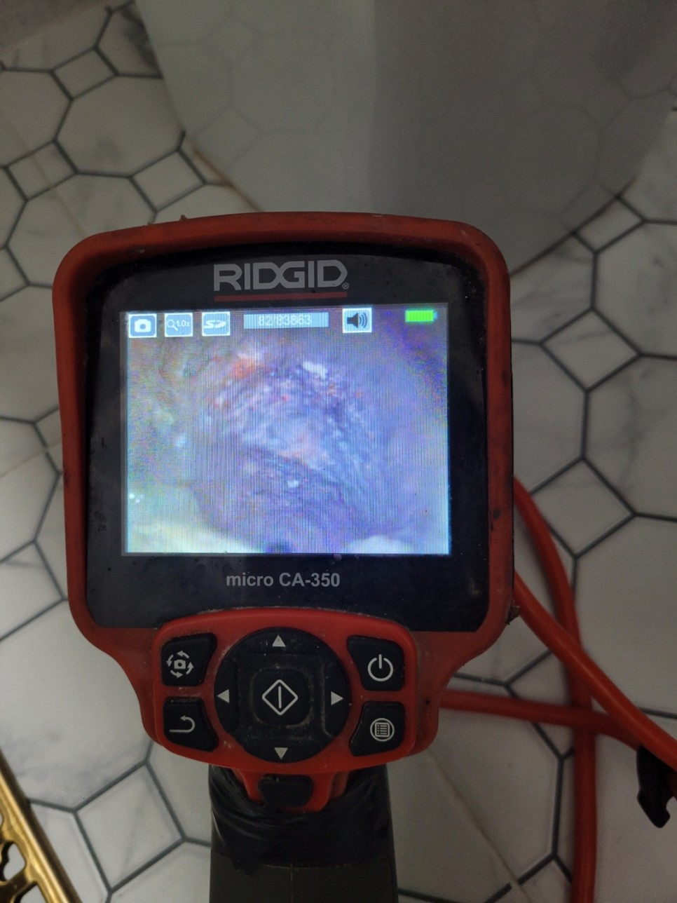
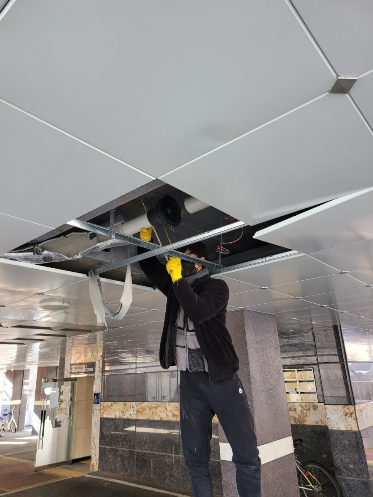

🏠 평택시 고덕동 송탄하수구막힘 긴급출동 배관문제는 여러가지 이유로 발생해요!
평택 변기막힘 전문 시공 후기

📋 작업 개요
- 위치: 평택
- 서비스 유형: 변기막힘, 하수구막힘, 배관막힘, 맨홀막힘, 역류해결, 배관청소, 고압세척
- 작업 일시: 2023. 1. 19. 22:21
- 업체명: 하수구수사대 (010-5615-2118)
🔍 문제 상황
안녕하세요 하수구수사대입니다.
하수구 전문업체로서 추운 겨울이 되면 가장 먼저 걱정이 되는 것이 바로 배관동파의 우려라고 할 수 있습니다. 특히나 불특정 이용객들이 많이 있는 공용화장실의 경우는 하수구가 자주 막히게 되면서 배수가 안되는 경우가 많이 있는데요 공중화장실의 이용변기의 경우에는 여러 종류의 이물질들도 함께 들어갈 수 있기 때문에 더욱 자주 배관의 문제가 발생하기도 하는 것입니다.
우리 일상에서 화장실에 있는 변기의 배수가 원활하지 않게 되면

🔎 원인 분석
💡 전문가 진단: 우리 일상에서 화장실에 있는 변기의 배수가 원활하지 않게 되면
공동으로 이용하는 화장실의 경우에는 사용에 상당한 불편이 생기게 될 수 밖에 없습니다. 이러한 문제를 가장 빠르게 해결을 할 수 있는 방법이 바로 전문업체를 통한 해결이라고 할 수 있는데요 이번에 방문한 현장 또한 평택시 고덕동 송탄하수구막힘 긴급출동으로 빠른 해결을 도와드리기 위해서 방문을 하였습니다. 지금부터 현장의 배관 해결 후기를 자세하게 알려드리도록 하겠습니다.
이번에 방문한 평택시 고덕동 송탄하수구막힘 긴급출동 현장은 공공건물로 공중화장실에 있는 소변기에서 물이 내려가지 않게 되면서 연락을 주신 곳이었는데요 여러 사람들이 사용을 하는 곳인 만큼 아무래도 막힘이 발생하기 쉬운 곳이라고 할 수 있습니다. 현장에 방문을 해서 가장 먼저 내부의 상태를 확인해 보았는데요 변기와 세면대 한곳만 막힌 것이 아니라 다양한 장소에서 동일하게 하수구막힘 문제가 발생하고 있는 상황이었습니다.
정확한 원인을 파악하기 위해서
내시경으로 내부를 자세히 확인을 해보니 큰 문제가 보이지 않았는데요 한 곳도 아니고 이렇게 여러 곳에서 배수가 되지 않는 현상이 발생하는 경우에는 아무래도 건물의 공용 배관이나 하수구쪽에 이상이 있는 것으로 생각을 하였습니다. 그래서 문제가 발생한 배관을 찾아서 다시 확인을 해보았는데요 하수구막힘의 문제를 해결하기 위해서 메인관으로 연결되는 맨홀을 찾아 보았습니다.

🔧 작업 과정
고객님께서는 오랫동안 건물의 맨홀 관리가 잘되지 않았다고 말씀해 주셨는데요 주변의 맨홀 상태를 확인을 해보니 각종 이물질들로 인해서 아주 더러운 상태라는 것을 확인하였습니다. 또한 깊이가 어느정도 있는 맨홀이었기 떄문에 물이 역류까지 하지는 않았지만 좀 더 방치를 하게 될 경우에는 역류까지도 발생을 할 확률이 있는 상황이었습니다.
보다 정확한 하수구 내부의 상황을 확인하기 위해서
배관 내시경을 이용해서 확인을 하였는데요 모든 배관작업은 어떤 원인으로 막혔는지를 알아야 정확하게 문제를 해결할 수 있는 것입니다. 특히 배관내시경의 경우는 우리가 눈으로 확인할 수 없는 내부를 자세하게 파악하고 원인을 찾는데 도움을 주는 필수장비라고 할 수 있습니다.
같은 전문업체라고 하더라고 내시경 없이 배관막힘을 해결하게 되면
또다시 막힘이 발생하게 되는 원인이 될 수 있는 것입니다. 그러므로 하수관 문제를 정확하게 해결을 하기 위해서는 꼭 정확한 원인 파악이 중요하다고 할 수 있습니다. 오랜 시간 방치가 되면서 굳어진 이물질들의 경우는 하루 이틀 사이에 쌓인 게 아니다 보니 일반적으로 제거를 하는 것은 어렵습니다. 화장실막힘을 해결하기 위해서 스프링 작업으로 이물질을 부수고 세척작업을 통해서 깨끗하게 배관을 청소하는 작업을 하였는데요
이렇게 전문장비를 통한 것으로 배관막힘을 완전히 해결을 하였는데요


✅ 작업 완료
평택시 고덕동 송탄하수구막힘 긴급출동 현장은 원인해결을 통한 것으로 고객님 께서도 아주 만족해 했던 현장이었습니다.
경기도 평택시 고덕중앙로 322 4층 129호




⚠️ 하수구 배관 막힘 예방 및 관리 가이드
- ✅ 머리카락, 비닐, 물티슈 등 물에 분해되지 않는 이물질은 하수구 유입을 절대 금지해 주세요.
- ✅ 하수구 거름망을 씌우고 모여진 이물질은 주기적으로 쓰레기통에 바로 비워주셔야 합니다.
- ✅ 배관 노후가 심할 경우 이물질이 더 쉽게 걸리므로 주기적인 배관 세척(고압세척 등)을 권장합니다.
- ✅ 작업 후 1년 이내 재발 시 하수구수사대에서 무상 A/S 보증 서비스를 제공합니다.
💡 핵심 정리
- 확실한 장비 작업(내시경 점검 및 샤프트 스케일링)으로 원인을 뿌리 뽑습니다.
- 작업 후 1년 이내에 동일한 부위 재발 시 100% 무상 A/S 서비스를 보장합니다.
- 서울 · 경기 · 인천 전 지역에 24시간 언제든 긴급 출동할 수 있도록 항시 대기 중입니다.
❓ 자주 묻는 질문 (FAQ)
🚨 평택 변기막힘 문제로 고민이신가요?
정확한 원인 진단과 확실한 시공으로 재발 없는 해결을 약속드립니다.
24시간 긴급 출동 | 서울 · 경기 · 인천 전지역 | 1년 내 재발 시 무상 A/S